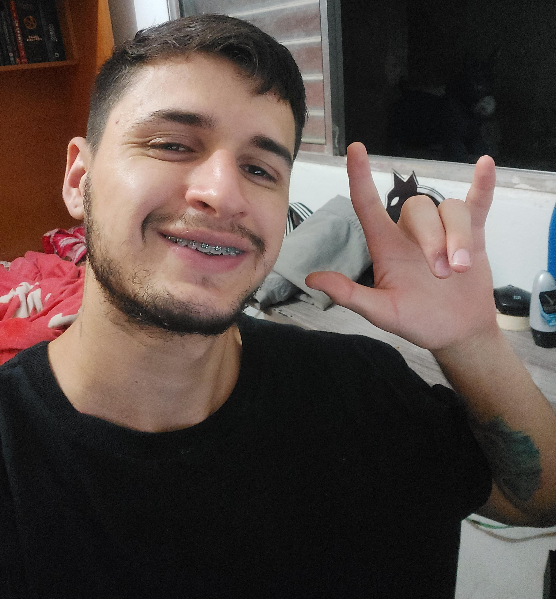
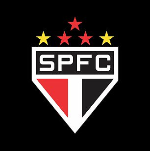

Sobre mim

Olá! Seja bem-vindo ao meu perfil.
Meu nome é Matheus Barison, tenho 24 anos e sou natural de São Paulo. Sou estudante de Engenharia da Computação na UFABC, onde estou em meu último ano de graduação.
Eu sempre fui apaixonado por tecnologia, e a UFABC foi a minha oportunidade de realizar o meu sonho de estudar engenharia. No entanto, a universidade não é fácil. O curso é exigente e exige muito esforço e dedicação.
Eu me sinto como se estivesse em uma batalha para me formar. É uma jornada difícil, mas que vale a pena. A universidade me ensinou muito sobre mim mesmo e sobre o mundo, e me preparou para o mercado de trabalho.
Estou confiante de que vou conseguir alcançar meus objetivos e me formar com sucesso. Espero que, no futuro, eu possa usar meus conhecimentos e habilidades para fazer a diferença no mundo.
Futebol

O futebol é minha grande paixão, e o São Paulo FC é o epicentro dessa devoção. Desde a infância, as cores e o espírito do clube se entranharam em minha vida, tornando cada partida uma experiência única e emocionante. A história rica em conquistas e a conexão com a imensa torcida tricolor me inspiram, e mesmo nos momentos difíceis, minha paixão pelo São Paulo FC permanece inabalável. Ser são-paulino é mais do que torcer por um time; é fazer parte de uma família, uma comunidade que compartilha valores e emoções que transcenderão gerações.
O São Paulo FC é a essência da minha paixão pelo futebol. É um orgulho carregar as cores do clube e uma fonte constante de alegria, emoção e identidade. A história vitoriosa do São Paulo FC e a lealdade da torcida são aspectos que tornam essa paixão inextinguível. Ser são-paulino é ser parte de algo maior do que o esporte, é viver uma história que continua a inspirar e emocionar ao longo do tempo.